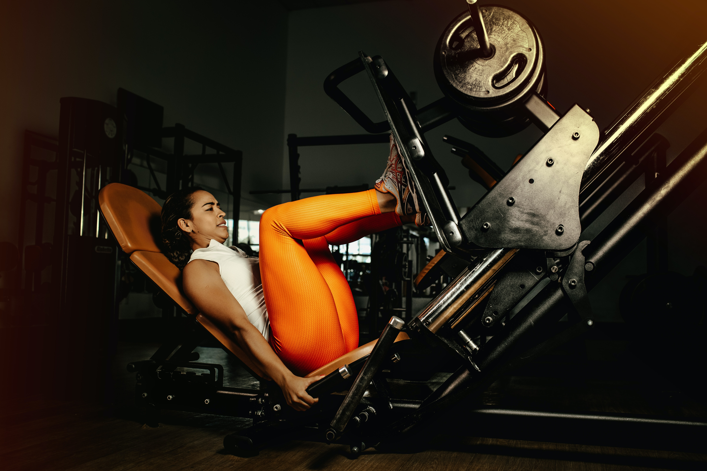

Exercise
- 하체운동
- 어깨운동
- 가슴운동
- 등운동
하체운동의 종류는 무엇이 있을까?
레그 프레스

퍼스널트레이너들은 레그 프레스를 싫어한다. 부정확한 자세로 실시하면 허리를 다칠 수 있기 때문이다. 헬스클럽에 있는 원판을 죄다 끌어 모아서 머신에 끼우고, 건성건성 몇 회 반복하는 사람들이 여기에 해당된다. 슬굴곡근과 둔근의 유연성이 부족해서 1회 반복할 때마다 허리가 패드에서 떨어진다면 최악이다. 레그 프레스는 헬스클럽에서 가장 남용되는 운동이다. 스쿼트를 할 때보다 무거운 중량으로 운동할 수 있으므로 어깨에 힘이 들어가기 때문이다. 하지만 제대로만 실시하면 레그 프레스는 아주 유용한 운동이다. 스쿼트와 레그 프레스를 병행하면 운동에 다양성을 불어넣을 수 있다.
장점
레그 프레스는 닫힌사슬운동이다. 발바닥이 땅과 붙어 있다는 뜻이다. 그러면 니 익스텐션 같은 열린사슬운동을 할 때와 달리 무릎에 부담을 주지 않으면서도 더 많은 힘을 낼 수 있다. 니 익스텐션이 순위에서 빠진 이유도 이 때문이다.
운동법
레그 프레스 머신에 똑바로 앉아 양발을 어깨너비로 벌리고 발판에 올리자. 가슴은 펴고, 허리는 패드에 붙이자.
천천히 머신의 잠금을 풀자. 무릎을 굽혀 발판을 내리되 둔근이 패드에서 들리기 전에 정지하자. 그 상태에서 무릎을 힘차게 뻗어 중량을 위로 밀자(정점에서 무릎을 다 펴지는 말자).